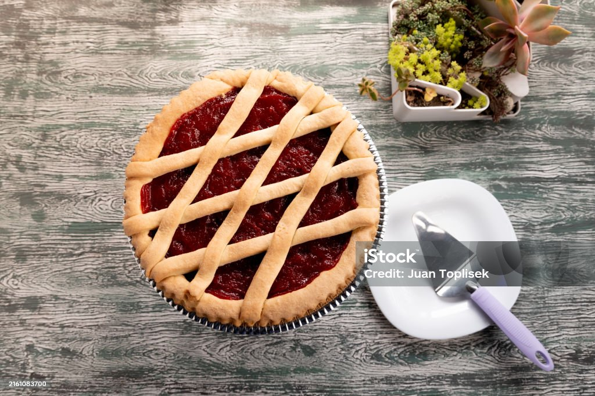

Pastafrola
Ingredientes:
- 200 g de manteca
- 100 g de azúcar
- 2 huevos
- 1 cdita de esencia de vainilla
- 400 g de harina 0000
- 1 cdita de polvo de hornear
- 400 g de dulce de membrillo
Preparación:
- Batir la manteca con el azúcar hasta obtener una crema.
- Agregar los huevos y la esencia de vainilla.
- Incorporar la harina y el polvo de hornear. Formar una masa suave.
- Estirar la masa y cubrir un molde enmantecado.
- Rellenar con el dulce de membrillo previamente ablandado.
- Hacer tiritas con el resto de la masa y colocar encima.
- Hornear a 180°C por 30-40 minutos hasta que esté dorada.